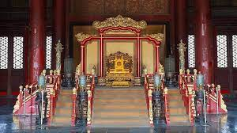
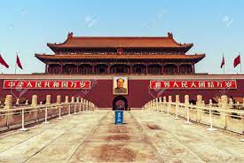

Cité Interdite!
Presentation
La Cité interdite est entourée des jardins impériaux. À l'ouest, se trouve le Zhongnanhai, un parc contenant deux lacs autour desquels se trouve, depuis 1949, le siège du gouvernement de la République populaire de Chine et du Parti communiste chinois7. Au nord-ouest se trouve le parc Beihai, un parc très populaire contenant lui aussi un lac. Au nord se trouve le parc Jingshan (la « colline de Charbon »), où s'est pendu en 1644 le dernier empereur Ming, Ming Chongzhen. Au sud de la Cité interdite s'étend l'immense place Tian'anmen, au centre de laquelle se trouve le mausolée de Mao Zedong.
Palais de la pureté céleste
Le palais de la pureté céleste, ou palais de Qianqingest un palais de la cité interdite à Pékin, en Chine. C'est le plus grande des trois pavillons de la cour intérieure, qui est située à l'extrémité nord de la Cité interdite. Les deux autres sont le pavillon de l'Union et le palais de la tranquillité terrestre. Durant la dynastie Qing, le palais sert souvent de salle d'audience de l'empereur, où il siége en présidant le Grand Conseil.
Porte de la paix céleste
La porte de la Paix céleste, ou Tian'anmen, à Pékin, est une porte monumentale de l'avenue qui constitue l'entrée Sud de la Cité impériale. Elle borde au Nord la place qui porte son nom. Elle est un des monuments symboliques de la Chine et, associée à l'immense place centrale de Pékin qui porte son nom, elle a été le lieu ou le témoin de nombreux évènements marquants de l'histoire chinoise.
